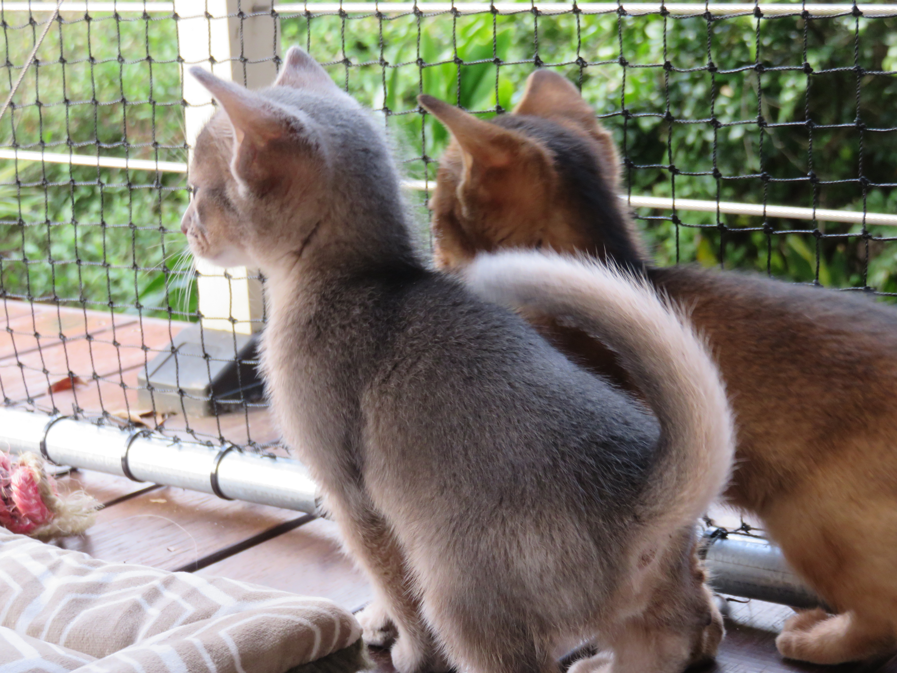
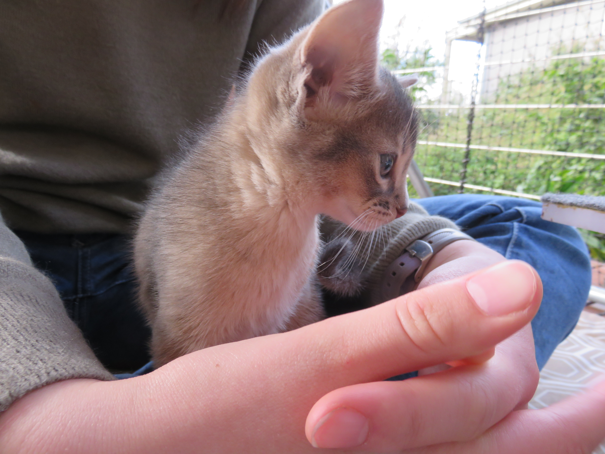

About Me
I am a student at Kelso High Campus in year 10. I was born on the 19th of April 2003. I am an avid reader and a cat person. But above all else, I am a Christian. Some indesputible facts:
- Cats are either marginally better than dogs or equal, depending on the weather
- Marvel is superior to DC
- Physical books are better than eBooks
Here is a picture of my two beautiful cats when they were kittens.
Jasper cat when he was tiny
